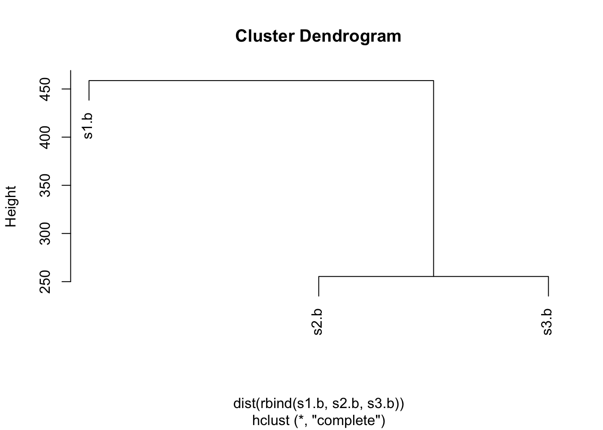

a b c d
1 1 200.0000 11 NA
2 2 222.2222 12 NA
3 3 244.4444 13 NA
4 4 266.6667 14 NA
5 5 288.8889 15 NA
6 6 311.1111 16 NA
7 7 333.3333 17 NA
8 8 355.5556 18 NA
9 9 377.7778 19 NA
10 10 400.0000 20 NA
Warning in min(x, na.rm = TRUE): no non-missing arguments to min; returning Inf
Warning in max(x, na.rm = TRUE): no non-missing arguments to max; returning
-Inf
df_normalized
a b c d
1 0.0000000 0.0000000 0.0000000 NA
2 0.1111111 0.1111111 0.1111111 NA
3 0.2222222 0.2222222 0.2222222 NA
4 0.3333333 0.3333333 0.3333333 NA
5 0.4444444 0.4444444 0.4444444 NA
6 0.5555556 0.5555556 0.5555556 NA
7 0.6666667 0.6666667 0.6666667 NA
8 0.7777778 0.7777778 0.7777778 NA
9 0.8888889 0.8888889 0.8888889 NA
10 1.0000000 1.0000000 1.0000000 NA
I created a normalization function to avoid repeating the same calculations for each column. The function scales numerical values between 0 ad 1 and handles missing values. This make the code easier to use.
Section 1B: Protein Structure Analysis
library(bio3d)
s1 <-read.pdb("4AKE")
Note: Accessing on-line PDB file
s2 <-read.pdb("1AKE")
Note: Accessing on-line PDB file
PDB has ALT records, taking A only, rm.alt=TRUE
Q1. What type of object is returned from read.pdb()?
The read.pdb()function returns a PDB object that has information about a protein structure like atomic coordinates.
Q2. What does trim.pdb() do?
The trim.pdb() function selects specific parts of a protein structure.
Q3. What input parameter would turn off the marginal black and gray rectangles, and what do they represent?
The sse=NULL input removes the black and gray rectangles representing secondary-structure regions.
Q4. What would be a better plot to compare across the different proteins?
An overlapping line plot because the B-factor values would be displayed on the same graph.
Q5. Which proteins are more similar in their B-factor trends, and how could you quantify this?
length(s1.b)
[1] 214
length(s2.b)
[1] 214
length(s3.b)
[1] 214
Since all three vectors have the same length we will use the following:
hc <-hclust(dist(rbind(s1.b, s2.b, s3.b)))plot(hc)

The proteins 1AKE and 1E4Y have most similar B-factor trends. Their similarity can be quantified using dist() to calculate distanced and hclust() to group the proteins based on their B-factor values.
Q6: How would you generalize the original code above to work with any set of input protein structures?
# Input: A PDB ID and an optional chain ID.# Purpose: Read a protein structure and plot its B-factors.# Usage: plot_protein("4AKE") or plot_protein("4AKE", "A")# Output: A B-factor plot for the selected protein.plot_protein <-function(pdb_id, chain="A") {# Read the protein structure protein <-read.pdb(pdb_id)# Select alpha-carbon atoms from the chosen chain protein_chain <-trim.pdb(protein, chain=chain, elety="CA")# Extract the B-factor values b_values <- protein_chain$atom$b# Plot the B-factor valuesplotb3(b_values, sse=protein_chain,typ="l", ylab="Bfactor")}
My function accepts a PDB ID. The read.pdb()function is used to retrieve a protein structure and trim.pdb() to select alpha-carbon atoms. Then, it extracts the B-factor values and creates a plot. This allows the same analysis to be repeated with different protein structures without rewriting the code.